|
WebSocket: A protocol implemented on top of HTTP that allows for bidirectional, browser-based client-server communication. Message Broker: Intermediary software that translates messages between sending and receiving protocols. |
After completing this lesson, you will be able to:
Stream data is continuous and unbounded, meaning that the streaming data source outputs data continuously and rarely has a discrete start and end point. Streaming data sources are likely different from the common data sources you are already working with in FME.
Some common stream data sources include:
Internet of Things |
Business Applications |
Digital Information |
|
|
|
FME Flow Streams processes data from these sources at very high velocities - millions of records per second! FME must connect to the data source continuously and be able to receive and process the data immediately. In a typical streaming workflow, FME connects to an intermediate WebSocket or message broker that gets the data directly from the data source.
WebSocket: A protocol implemented on top of HTTP that allows for bidirectional, browser-based client-server communication.
Message Broker: Intermediary software that translates messages between sending and receiving protocols.
Typically, FME connects to WebSockets and message brokers through Connector transformers. These transformers must be capable of running in Stream mode. As of 2025, FME supports connecting to these WebSockets and brokers:
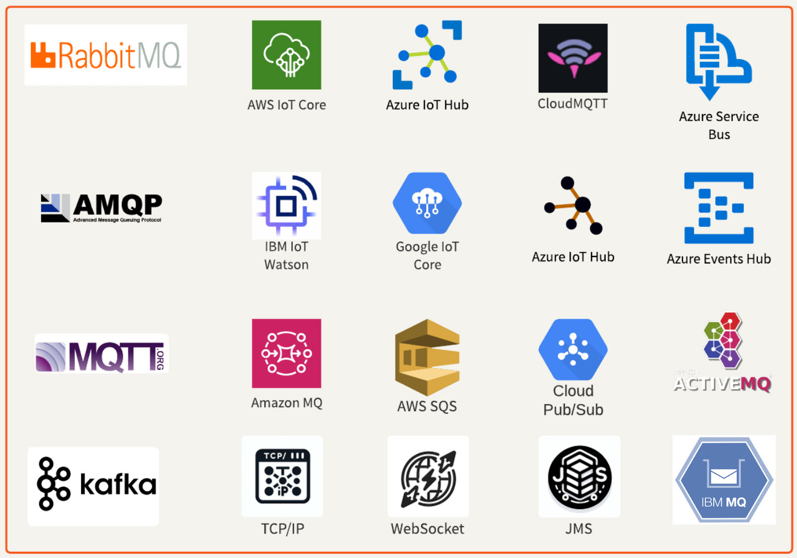
For a workspace to process streaming data, you must set the Connector transformer to Stream mode. In Stream mode, the transformer and workspace will run indefinitely until you stop the translation. FME Flow Streams utilize Stream mode workspaces, allowing them to process data continuously without interruption. Some transformers that support Stream mode include:
A workspace should only contain one transformer set to receive messages in stream mode. While it's possible to add multiple, the workspace won't run as expected, and data will not be received. Create a separate workspace to stream data from another source or consider using topics if the provider you are connecting to supports them.
Some of these transformers also offer a Batch mode. In Batch mode, the workspace and transformer only receive a specific number of records from the stream data source before closing the connection and completing the translation. In the following exercise, you will use a KafkaConnector to connect to a data stream. While building and testing the workspace in FME Workbench, it is easier to use Batch mode to cache and inspect the data. Then, when you are ready to deploy your workflow with FME Flow Streams, change the mode to Stream to run the workspace continuously.
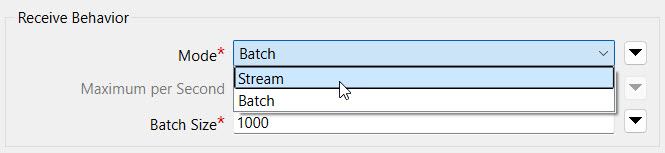

Jennifer, a GIS specialist, is creating a workflow to monitor the GPS locations of a city's vehicle fleet. The fleet consists of 1,850 vehicles that report their location approximately every 3 seconds, which equates to about 600 messages per second, sent using Confluent, a data streaming platform. To connect to the data stream, Jennifer needs to configure a KafkaConnector that uses an Apache Kafka web connection to connect to the stream and receive the data. In Jennifer's workspace, she also wants to perform processing on the GPS data to send alerts if fleet trucks are outside the city boundary for more than one minute. Jennifer's not very familiar with FME Streams, so she needs your help to build her workspace and deploy a stream on FME Flow.
In this course, you will help Jennifer deploy a stream that accomplishes the following:
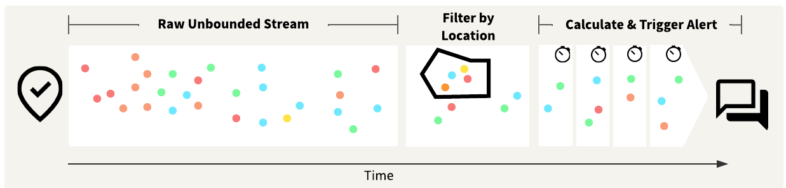
Ultimately, you will create a workspace that resembles the screenshot below and deploy it to run continuously using FME Flow Streams.
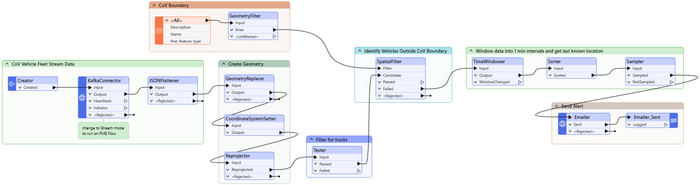
Jennifer has already begun creating the workspace. She has started with her KafkaConnector, which you will need to finish assembling to connect to the data stream. She's also added transformers to extract the JSON returned from the KafkaConnector and create geometry. In the disabled bookmarks, Jennifer reads in the City of Vancouver boundary and sends alerts by email. You will use these in later exercises; for now, leave them collapsed and disabled.
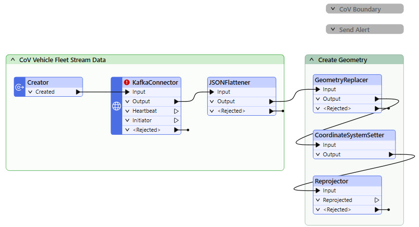
In this exercise, you will:
Open the starting workspace (C:\FMEData\FMEData\Workspaces\Streams\streams-starting-workspace.fmw) in FME Workbench. If FME prompts you to install the "Apache Kafka Connector", click Install.
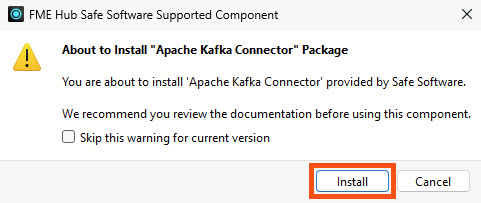
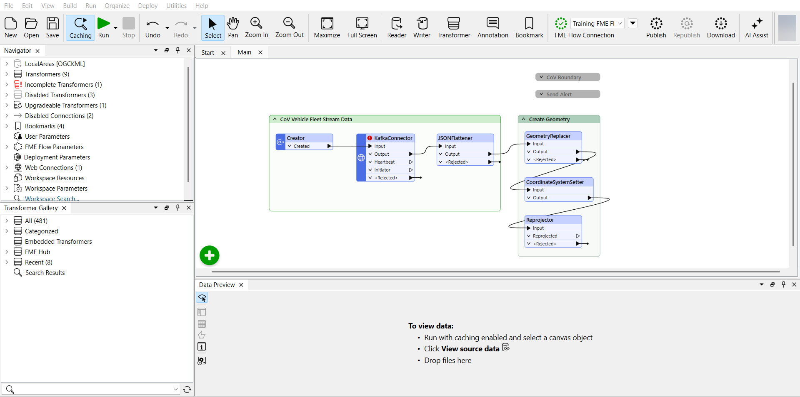
Double-click the KafkaConnector to open its properties.
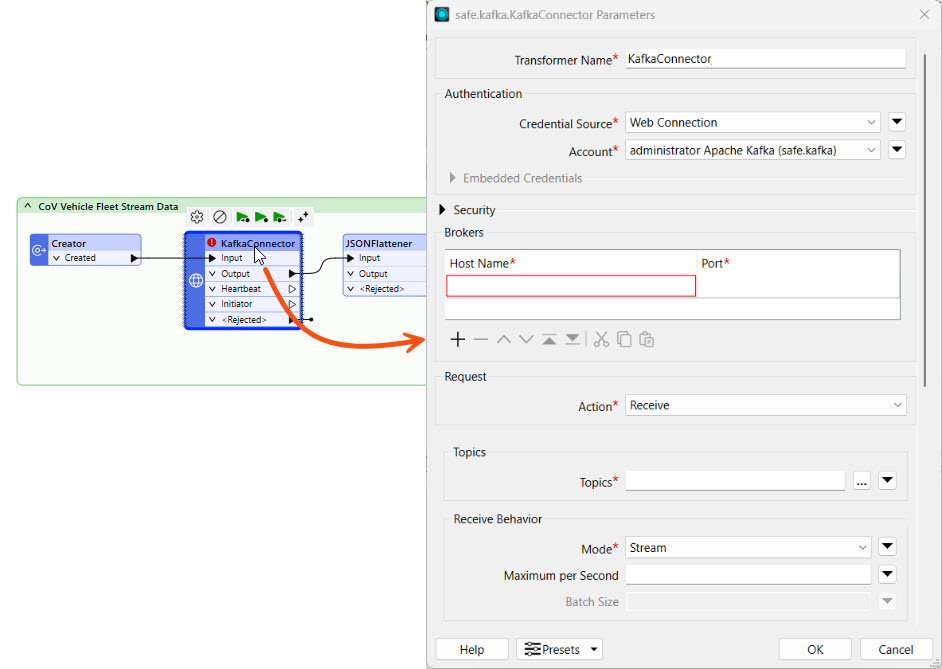
The Authentication and Security sections for the KafkaConnector are already complete. The Connector utilizes a web connection to authenticate and establish a connection to the data stream from Confluent.
Configure the following parameters:
For Topics, click the ellipses and select cov-fleet-location from the Topics section.
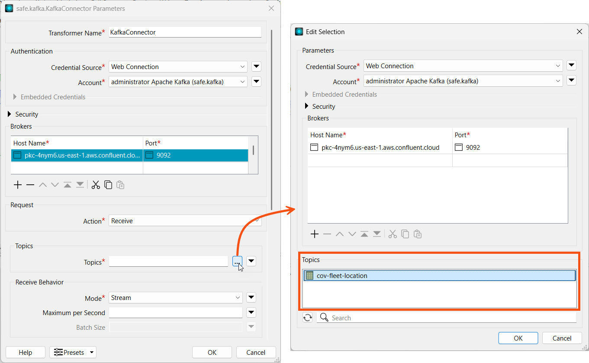
Click OK to close the Edit Selection window.
Set the following parameters for Receive Behavior:
We already set the remaining parameters for you. Your complete KafkaConnector settings should look like this:
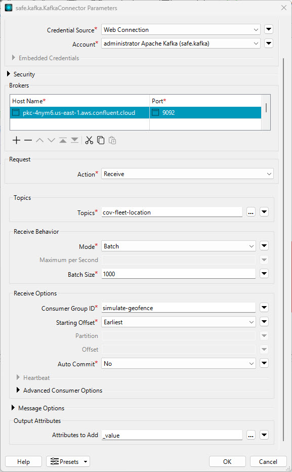
For developing and testing your workspace, it is easier to use Batch mode, as it does not run the workspace indefinitely like Stream mode, and it generates data caches that you can inspect. We will switch the Connector to Stream mode once we are done building it.
Jennifer has already configured the JSONFlattener to expose attributes from the JSON in the _value attribute. She's also configured the GeometryReplacer, CoordinateSystemSetter, and Reprojector to create geometry for the streamed records.
Run the workspace. The enabled transformers in the workspace will run and cache the data.
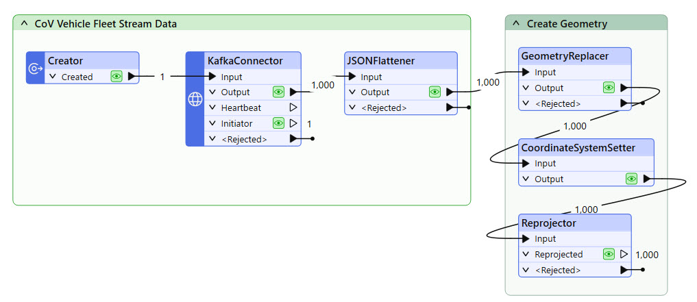
Click on the data cache from the Reprojector transformer to inspect the data we're working with.
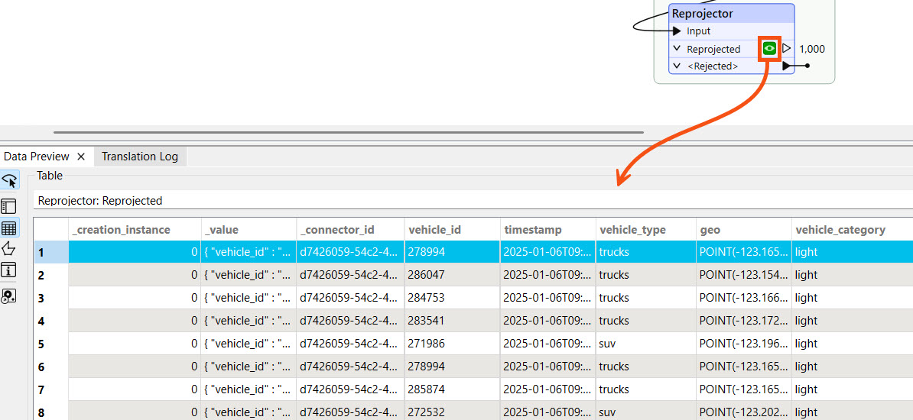
In the next lesson, you will use the vehicle_type attribute to filter for trucks. Later in this course, you will use the vehicle_id to filter the last known location for the vehicle in each time window.
The data stream for the City of Vancouver's vehicle fleet is a simulated stream for training, meaning the data is not live and does not occur in real-time. The dates and timestamps you receive for the data will not match the current date and time.